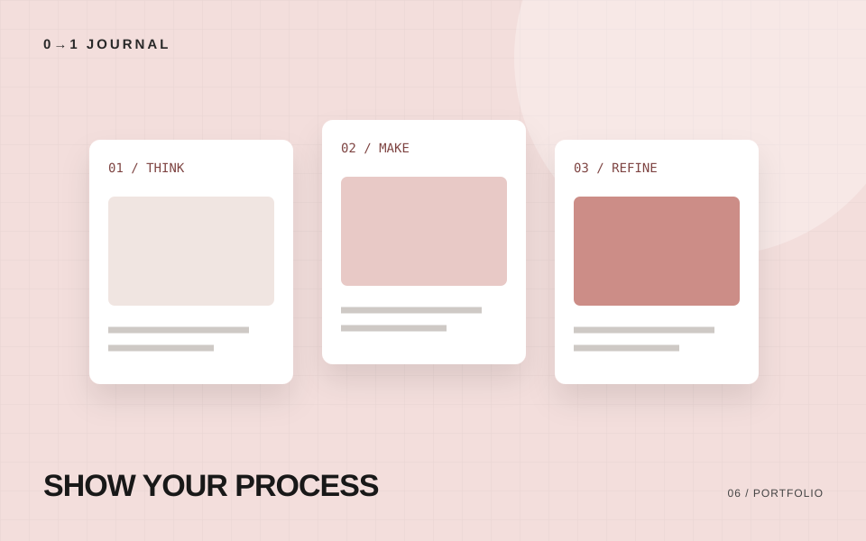

制作したサイトを紹介するとき、大きな完成画像だけでは、自分が何を考えたのかまでは伝わりません。作品紹介には、見た目と一緒に判断の理由を残してみましょう。
誰のために作ったのか
最初に、対象となる人と、解決したい課題を書きます。「飲食店のサイト」だけでなく、「初めて来るお客さんが、営業時間と場所をすぐに確認できるサイト」のように具体化します。
自主制作や模擬案件なら、そのことを明記します。実在するお客さんからの依頼と誤解されないようにしましょう。
自分が担当した範囲
企画、情報設計、デザイン、実装、公開。どこを担当したのかを分けて書きます。チーム制作の場合は、ほかの人が担当した部分も区別します。
使用技術を並べるだけでなく、その技術を選んだ理由を一つ添えると、考え方が伝わります。
迷った点と、選んだ理由
制作中の判断を一つ取り上げてみてください。
例：トップページの最初に商品写真を大きく置く案と、営業情報を先に置く案で比較しました。来店前の確認を目的にしたため、営業時間へのリンクを最初の画面に置きました。
これは架空の説明例です。自分の作品では、実際に検討した内容に置き換えます。
指摘と修正をセットで見せる
レビューを受けた場合は、「修正前」「指摘」「修正後」を一組にします。同じ画面幅で比較すると、変えたところが分かりやすくなります。
指摘を受けてどう考え、何を変更したのかを書きましょう。レビュー担当者のコメントを掲載する場合は、掲載の許可も確認します。
確認できた結果だけを書く
表示の崩れを直した、フォームの受信を確認した、見出し構造を整理した。数値がなくても、具体的な事実は制作の説明になります。
計測していない成果や、確かめていない利用者の反応は書かないようにします。残っている課題を書いておくことも、次の改善につながります。
記載内容へのご質問や訂正のご連絡は、hello@junkbranding.comまでお願いします。